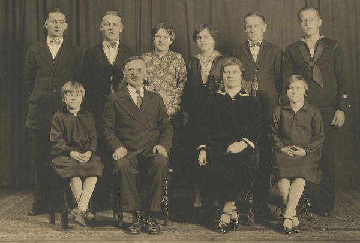

Stare fotografie wykonane w pracowni Jana Makucha ze Zdziarca.
Zdjęcia i opisy przesłane przez Annę Muchę - siostrzenicę.
Copyright: Anna Mucha
Pani Anna prosi osoby posiadające inne zdjęcia Jana Makucha o kontakt.
"[..] zdjęcie pieczątki umieszczonej na odwrocie fotografii wykonanej w pracowni fotograficznej Janka Makucha. [...] pracownia mieściła sie w budynku słynnego aptekarza Eugeniusza Matuli w Radomyślu Wielkim. Od frontu mieściła się apteka, a do zakładu fotograficznego wchodziło się od tyłu domu przez bramę. Sztukę fotografowania i wywoływania zdjęć posiadały też siostry Janka Hanka i Maryna.".
Zdjęcie zrobione przed 1939 rokiem w zagrodzie Makuchów w Zdziarcu.
"Siedzi moja prababka Anna Makuch z d. Krawczyk, stoją od lewej jej siostra i córka Katarzyna Makuch".
Zdjęcie zrobione przed 1939 rokiem w zagrodzie Makuchów w Zdziarcu.
"Moja mama Waleria Makuch z krowami w tle wiatrak na polu Makuchów."
Zdjęcie zrobione w latach 50-tych XX wieku w domu Staszka i Tekli Makuchów w Zdziarcu.
"Paczka od rodziny z Ameryki. Na górze pieca siedzą gospodarze (moi dziadkowie), na dole siedzi ich córka Hanka Makuch. Obok dziadków stoi ich synowa Helusia Makuch (żona Jana)."
Zdjęcie zrobione przed 1939 rokiem w zagrodzie Makuchów w Zdziarcu.
"Rodzina Makuchów przy "Krawcykowym" stawie w Zdziarcu
Od lewej: Hanka, Walerka (mama p. Anny), Maryna, Tekla i Staszek (moi dziadkowie) przed nimi stoi Frania i dalej Józek i Jonek Makuchowie. Imiona podaję tak jak były wymawiane. Do dziś żyją moje ciocie Hanka i Franka."
Zdjęcie zrobione przed 1939 rokiem w zagrodzie Makuchów w Zdziarcu.
"Moja mama Waleria Makuch z rodzeństwm."

Zdjęcie zrobione w stanie Connecticut w latach trzydziestych XX wieku.
"Zofia z d. Golec ur. w Dulczy Wielkiej z mężem Ignacem Makuck i ich dziećmi:
od lewej siedzą: Helen, Julie. Od lewej stoją: Zig, Walter, Anne, Mary, Peter i Gregory. "
Zdjęcie zrobione w okresie międzywojennym w stanie New York
"Julie and Louise Legutko - córki Marii z d. Makuch i Stanisława Legutko."